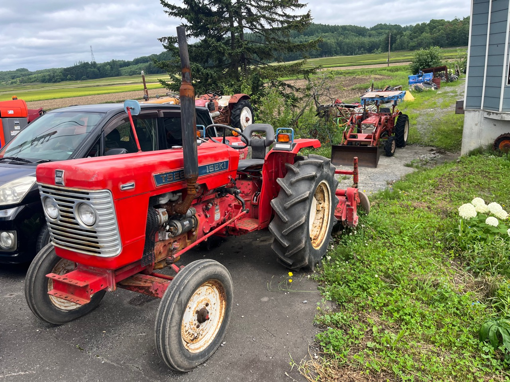
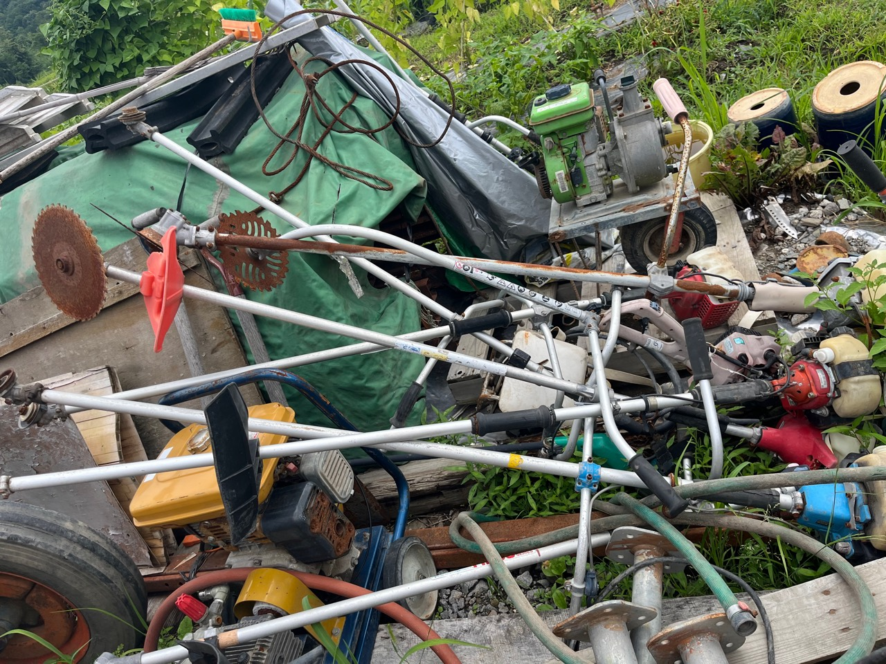
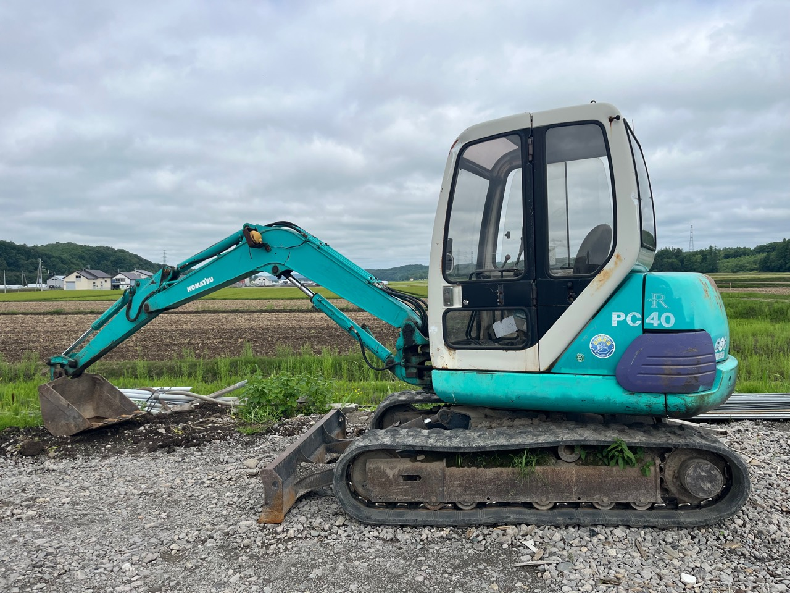
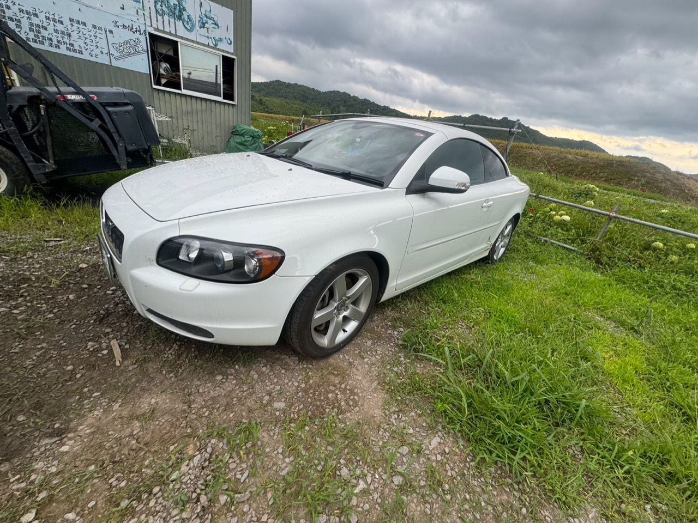
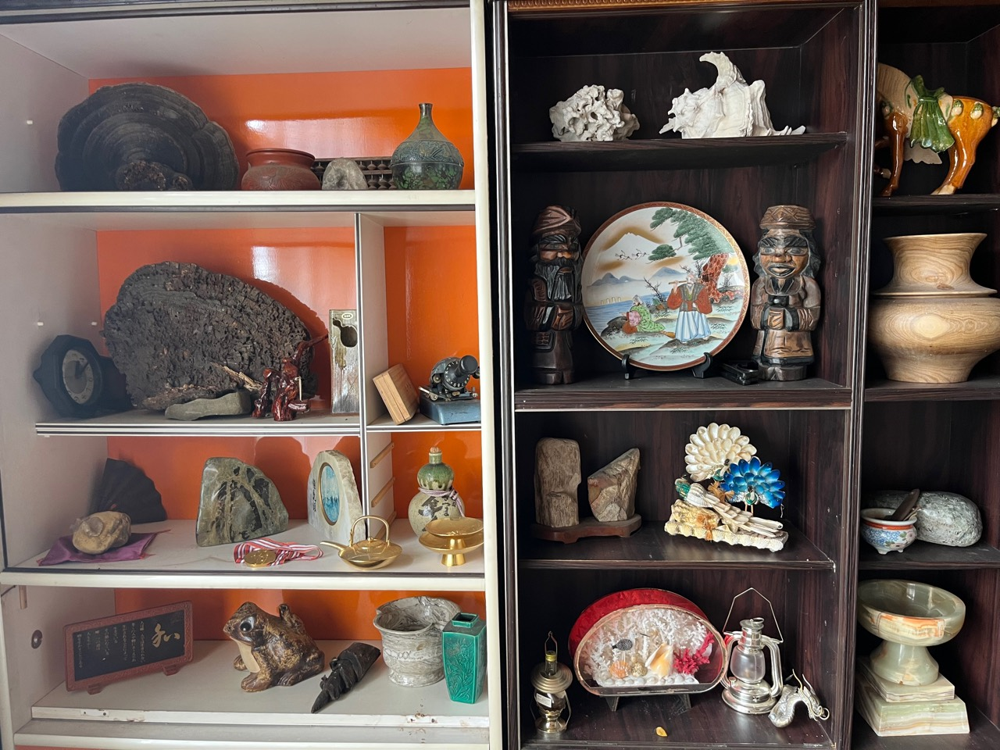
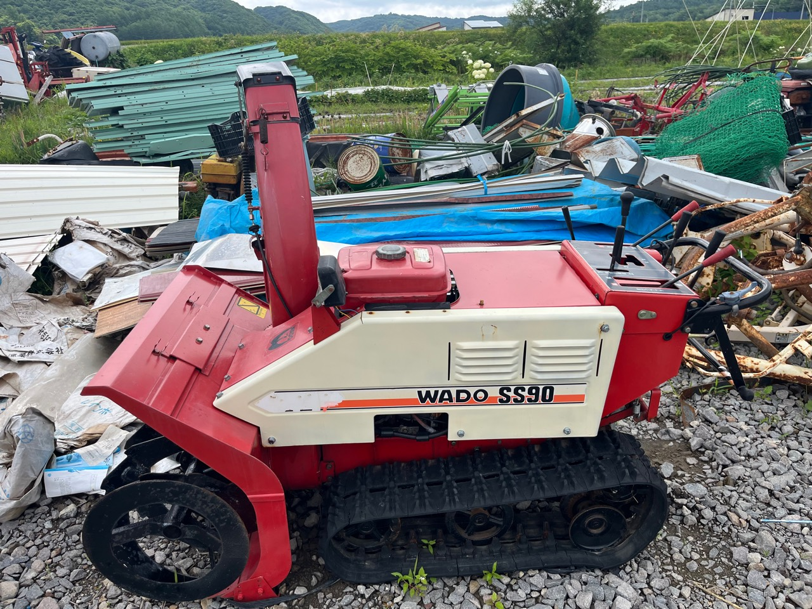

買取
農機具、建設機械、工具、車両、金属類、設備、雑貨などを幅広く査定します。

法人・事業者歓迎｜出張見積もり無料
倉庫・工場の整理、農機具・建設機械・鉄くずの買取、ビニールハウス・倉庫の解体まで。
「何が売れるか分からない」という段階から、丸ごとご相談いただけます。
ONE-STOP SERVICE
機械や金属だけを選び出す必要はありません。倉庫や工場、事業所に残った品物を、そのままの状態からご相談いただけます。片付けや搬出、ビニールハウス・倉庫の解体も含めて対応します。
農機具、建設機械、工具、車両、金属類、設備、雑貨などを幅広く査定します。
仕分け、買取、搬出まで一括相談。法人・事業者からのまとまったご依頼も歓迎します。
ビニールハウスや倉庫などを解体。状態の良いビニールハウスは、買取できる場合もあります。
品物同士の交換もご相談ください。現金だけではない、柔軟な取引に対応します。

AS-IS IS OK
サビている物、長年置いたままの物、大量にある物も、写真や現地の状況から確認します。掲載されていない品物も、まずは写真やお電話でご相談ください。
写真を送って相談する →WHAT WE BUY
トラクター、コンバイン、耕運機、草刈機、運搬機、除雪機など

ユンボ、フォークリフト、発電機、溶接機、コンプレッサーなど
チェーンソー、モーター、給湯器、エアコン、電気機器など

乗用車、トラック、バイク、船外機、タイヤ、ホイールなど

楽器、陶磁器、骨董品、雑貨など。掲載のない品物もご相談ください。

SERVICE AREA
HOW IT WORKS